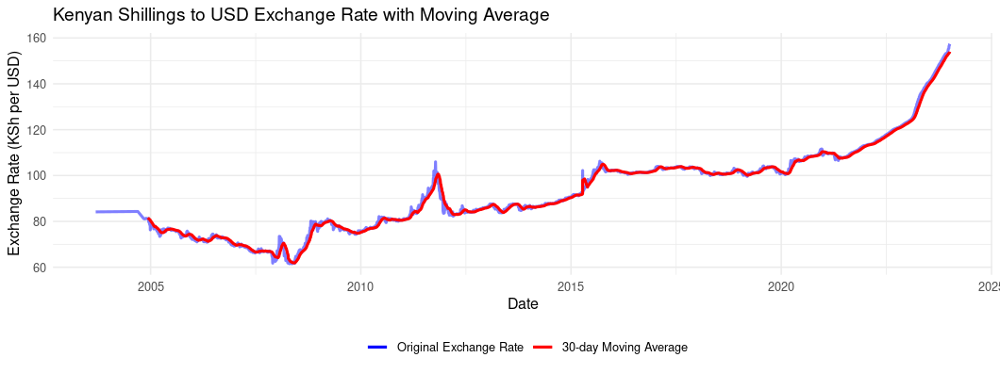

Analyzing Kenya’s Fiscal Trends from 2000 to 2023
Income & Expenditure from 2000 to September 2023
Exploring Kenya’s fiscal journey since 2000 unveils a narrative of growing revenues shadowed by even greater expenditures, signaling an enduring budget deficit financed through increased borrowing. The spike in spending post-2015, spurred by ambitious infrastructure projects like the Standard Gauge Railway and the Nairobi Expressway, promises future growth yet expands the fiscal divide. The notable expenditure peak around 2020 likely mirrors the economic turbulence induced by the COVID-19 pandemic. As the nation grapples with these fiscal dynamics, policymakers are tasked with unraveling the complexities of the revenue-expenditure gap, evaluating the prudence of current borrowing practices, and formulating strategies for fiscal equilibrium. With effective debt management, the delicate act of leveraging infrastructure development for economic stability becomes crucial. Kenya, akin to numerous developing nations, stands at a crossroads where fostering growth must be judiciously balanced with the imperative of debt sustainability. Please note that some 2023 data is still forthcoming. You can find the data used in this analysis Government Finance Statistics
What type of expenditure is rising
The graph indicates three types of government expenditures in Kenya:
Total Recurrent Expenditure: This captures the government’s regular and ongoing expenses required to run its services, including salaries, maintenance, rent, and utilities. The graph shows a consistent increase in these costs, indicative of expanded government operations or increased cost of services.
Development Expenditure: Referring to funds allocated for infrastructure projects, development programs, and investment in assets that will benefit the economy in the long term. The upward trend suggests escalating investment in these areas, Which aligned with big infrastructure projects by former Kenyan president Uhuru Kenyatta.
County Transfer: Represents the fiscal allocations to the devolved county governments, a system established after the 2010 constitution. The gradual rise in this expenditure reflects the increasing transfer of resources as part of Kenya’s commitment to decentralized governance, potentially leading to more localized development and service delivery.
- Seeing that recurrent expenditure is the fastest rising it may be good to look at the sub types of recurrent expenditure to see what is causing the rise.
What is causing the rise in recurrent expenditure
The graph reflects Kenya’s recurrent expenditure categories, each revealing its fiscal impact and broader economic implications:
Wages: These costs, associated with government employee salaries, have increased steadily, reflecting a controlled rise in the government’s wage bill.
Pensions: The funds for retired government workers’ benefits have shown gradual growth, mirroring the government’s extended financial obligations.
Domestic Interest: The sharply rising expenditure here represents payments on the government’s domestic debt. This steep rise suggests increased borrowing in domestic market. This can cause crowding-out effect, where government borrowing limits the funds available for private sector investment, potentially hampering private sector growth and economic diversification.
Foreign Interest: As payments on foreign debt, these have not risen as sharply as domestic interest, but they remain a significant part of the expenditure. With the Kenyan shilling’s depreciation against major currencies, the cost of servicing foreign debt in local currency terms increases, placing additional strain on government finances. This depreciation makes foreign interest payments more expensive and can exacerbate the debt burden, emphasizing the need for prudent foreign debt management.
Recurrent Expenditure Other: This category covers all other regular government operational costs, rising steadily over the years.
The substantial rise in domestic interest payments represents a double-edged sword: it directly feeds into the debt cycle, with the government potentially borrowing more, and risks economic vitality by crowding out private sector borrowers. This situation underscores the importance of a well-calibrated debt management strategy that considers the health of the private sector and the broader economy, especially in light of the challenges posed by the depreciation of the Kenyan shilling.
Outlook
Kenya’s ongoing struggle with rising debt servicing costs and a reluctance to reduce government expenditure has led to a situation that may persist. The nation has recently secured loans amounting to approximately Sh2.1 trillion from the World Bank and the International Monetary Fund (IMF) over the next three years. These loans are crucial, especially given the Kenyan shilling’s depreciation, which makes foreign debt servicing more expensive. The IMF and World Bank loans typically come with lower interest rates, which can alleviate some immediate financial pressures.
The IMF has approved a $941 million lending boost to Kenya, offering some relief as the country tackles financial challenges. These funds, disbursed under various facilities, aim to support the government’s efforts to maintain macroeconomic stability. Additionally, the World Bank’s $12 billion support package over the next three years is expected to bolster Kenya’s fiscal position.
While these loans can provide temporary relief, they also increase the country’s overall debt burden. To sustainably manage this situation, Kenya might need to consider fiscal consolidation efforts, such as enhancing revenue through tax reforms and reducing non-essential spending. Balancing fiscal discipline with the need to foster economic growth will be essential to ensure the country’s financial stability and to prevent further indebtedness. This pressures can be seen already in the depreciation of the Kenyan Shilling against major currencies, which can exacerbate the debt burden and increase the cost of servicing foreign debt. 